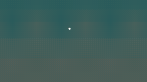
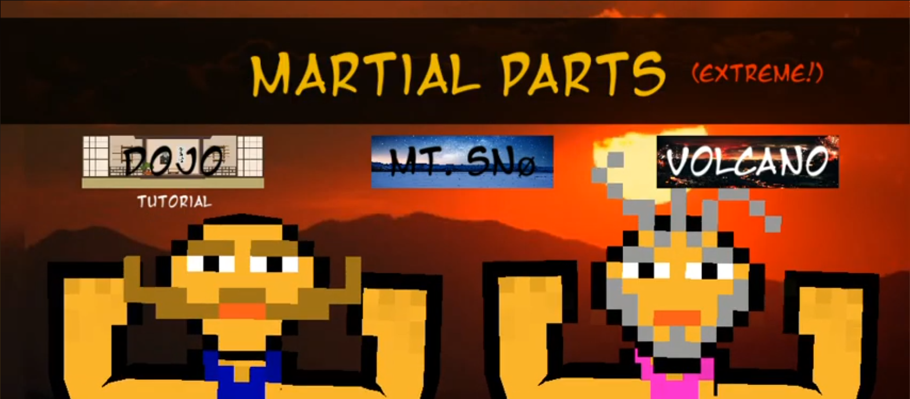

I am a generalist at heart who loves to explore new concepts and interconnect different areas of knowledge.
I am looking for a role where I can grow as a developer, contribute to useful products, and bring a broad creative-technical perspective to the team.
I sit somewhere between technical problem solving and creative production. That
combination makes me interested in work where software, people, sound, and
visual design meet.
16 Personalities - The Mediator
I have an INFP-T personality type, which means I am a thoughtful and idealistic person who values authenticity, creativity, and meaningful connections.
I am driven by a desire to make a positive impact on the world and to help others.
I am also a bit of a perfectionist and always strive to learn and grow.
Music and design have trained me to listen, refine details, and think about
the full experience rather than only the technical implementation.
What I am looking for
I am interested in roles where I can grow as a developer, contribute to
useful products, and bring a broad creative-technical perspective to the team.
Experience
Work and projects
Development
Rayleigh Scattering
Rayleigh Scattering is an interactive Python simulation that visualizes how sunlight scatters through the atmosphere and changes the color of the sky.
Users can adjust the sun angle, atmospheric density, scattering strength, and sampling line to explore how different conditions affect the resulting sky gradient.
The project combines a simplified physics model with a custom Matplotlib interface and animation preview.
The simulation provides visually engaging videos with a broad variety of color combinations and gradients.
Can be used by designers, artists and developers to create unique sky backgrounds for games, interfaces, palettes or digital art projects.

I was interested in creating this simulation to get a deeper understanding of the phenomena,
and as I kept exploring it reminded me a lot of how sound works.
Basically the red sunset is like the bass you hear outside of a nightclub and the atmosphere is the wall.
The higher frequencies have a higher probability of being reflected and therefore you are left with the lower frequencies.
(You can set the atmosphere so thick in the simulation that not even the red light gets through, leaving only a red sun surrounded by darkness,
which you probably can find on planets with a dense atmosphere)
Martial Parts

Capabilities
Skills
Development
Web development fundamentals
Practical problem solving
Version control with Git
Creative technology
Music and sound design
Interface and experience thinking
Design-minded technical work
Collaboration
Clear written communication
Structured learning
Feedback-driven improvement
Personality
Interests
Technology
Web apps, automation, AI tools, creative coding, product development, and
software that solves practical problems.
Music
Composition, sound design, production, and the way audio can shape mood,
identity, and interaction.
Design
Clear interfaces, useful structure, visual balance, and details that make
digital products feel easier to understand.